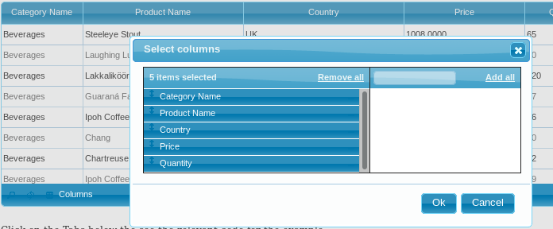

Integrations
¶This chapter considered a integration of external modules with Guriddo jqGrid. In this case it is needed to load additional modules in order these features to work with Guriddo jqGrid.
jQuery UI integrations¶
jQuery UI is a curated set of user interface interactions, effects, widgets, and themes built on top of the jQuery JavaScript Library. Whether you're building highly interactive web applications or you just need to add a date picker to a form control, jQuery UI is the perfect choice.
More information on jQuery UI can be found here
As already described Guriddo jqGrid can use the jQurery CSS framework. Note that the jQuery CSS definitions can be used separately from the javascript code. In this chapter we will explain how we can implement some jQuery UI JavaScript features in Guriddo jqGrid.
Installation¶
To use the features that are made in jqGrid it is necessary to include the jQuery UI library in the head section of the document or any other working way. For more information how to download the jQuery UI library visit their web site
After downloading the jQuery UI your configuration can look like this:
<!DOCTYPE html> <html> <head> <meta content="text/html; charset=utf-8" /> <title>My First Grid</title> <link rel="stylesheet" type="text/css" media="screen" href="css/jquery-ui.css" /> <link rel="stylesheet" type="text/css" media="screen" href="css/trirand/ui.jqgrid.css" /> <script src="js/jquery.min.js" type="text/javascript"></script> <script src="js/jquery-ui.min.js" type="text/javascript"></script> <script src="js/trirand/i18n/grid.locale-en.js" type="text/javascript"></script> <script src="js/trirand/jquery.jqGrid.min.js" type="text/javascript"></script> </head> <body> ... </body> </html>
Where jquery-ui.min.js is the jQuery UI library. In order to overcome some confusions we recommend to download the full version of the UI library.
The code which integrate jQuery UI library is in module grid.jqueryui.js
Modules¶
Sortable Columns¶
This feature is integrated in jqGrid, and hence it is not necessary to do something special. The feature uses jQuery UI sortable widget. The method allow to reorder the grid columns using the mouse. The only necessary setting in this case is to set the sortable option in jqGrid to true. Using our example from Quick Start the code is:
<script> var dataArray = [ {name: 'Bob', phone: '232-532-6268'}, {name: 'Jeff', phone: '365-267-8325'} ]; $("#grid").jqGrid({ datatype: 'local', data: dataArray, sortable : true, colModel: [ {name: 'name', label : 'Name'}, {name: 'phone', label : 'Phone Number'} ], caption : 'Users Grid', height: 'auto' }); </script>
This option works when Bootstrap CSS is used. In this case the jQuery UI sortable widget should be loaded.
The sortable option can be a object in which we can add (or overwrite) parameters that are available in the jQuery UI sortable widged. To do this a options property should be set. By example to change the jQuery UI sortable parameter forcePlaceholderSize do:
$("#grid").jqGrid({ ..., sortable: { options: { forcePlaceholderSize : true } }, ... });
This option can be a function. In case it is a function the update sortable event is replaced with it.
To get the reordered columns use the grid parameter remapColumns:
var columns = $("#grid_id").jqGrid('gerGridParam', 'remapColumns');
Initially the first position correspond to the first column and etc. - by example [0,1,2,3] in case we have 4 columns defined in colModel. After reordering of columns the array can look like this: [1,0,3,2]. This mean the the first column(0) is moved to the second position(1) and the third column(2) is moved to four position(3).
Any parameter can be added including options, methods and events
Column Chooser¶
With this method we can reorder columns and set visible and hidden columns in the grid. This method uses sortable and dialog widgets. Additionally to these widgets the multiselect widget is used. This widget is available in the jqGrid distribution and needs to be loaded again with its CSS.
The javascript file is named ui.multiselect.js and is provided in js subdirectory and css file is named ui.multiselect.css and is available in css directory. The code for loading is:
<!DOCTYPE html> <html> <head> <meta content="text/html; charset=utf-8" /> <title>My First Grid</title> <link rel="stylesheet" type="text/css" media="screen" href="css/jquery-ui.css" /> <link rel="stylesheet" type="text/css" media="screen" href="css/trirand/ui.jqgrid.css" /> <link rel="stylesheet" type="text/css" media="screen" href="css/ui.multiselect.css" /> <script src="js/jquery.min.js" type="text/javascript"></script> <script src="js/jquery-ui.min.js" type="text/javascript"></script> <script src="js/ui.multiselect.js" type="text/javascript"></script> <script src="js/trirand/i18n/grid.locale-en.js" type="text/javascript"></script> <script src="js/trirand/jquery.jqGrid.min.js" type="text/javascript"></script> </head> <body> ... </body> </html>
Calling conventions:
To use the method do
... jQuery("#grid_id").jqGrid('columnChooser', options);
where options is a object with properties listed below.
After calling this method a modal dialog appear where the user can reorder columns and set which of them can be visible and which of them can be hidden.

This method uses the following options from the language file - by example the English file is:
$.jgrid.regional["en"] = { ... col : { caption: "Select columns", bSubmit: "Ok", bCancel: "Cancel" }, ... }
where caption is the title of the dialog, bSubmit - button text to confirm the changes, bCancel is the text for the cancel(close) dialog action.
| Property | Type | Description | Default |
|---|---|---|---|
| caption | string | Title of the modal dialog | see lang file |
| width | number | Set the width of the dialog in pixels | 400 |
| height | number | Set the height of the dialog in pixels | 240 |
| classname | string | Class which will be added to the selector where the selects are build | null |
| done | function | Function which will be called when the user press Ok button. In the current implementation we call remapColumns method in order to reorder the columns - see below | |
| msel | mixed | msel is either the name of a ui widget class that extends a multiselect, or a function that supports creating a multiselect object (with no argument, or when passed an object), and destroying it (when passed the string "destroy") | multiselect |
| dlog | mixed | dlog is either the name of a ui widget class that behaves in a dialog-like way, or a function, that supports creating a dialog (when passed dlog_opts) or destroying a dialog (when passed the string "destroy") | dialog |
| dlog_opts | mixed | dlog_opts is either an option object to be passed to "dlog", or (more likely) a function that creates the options object. The default produces a suitable options object for ui.dialog | |
| cleanup | function | Function to cleanup the dialog, and select. Also calls the done function with no permutation (to indicate that the columnChooser was aborted |
Function done defined above has the following definition in the original jqGrid code:
opts = $.extend({ ... "done" : function(perm) { if (perm) { self.jqGrid("remapColumns", perm, true) }, } ... });
In order to do other things after reordering you can redefine this option (function). For example let say that we want to recalculate the width of some elements on the page after the user show or hide some columns. The code can look like this:
jQuery("#list").jqGrid('columnChooser', { done : function (perm) { if (perm) { // "OK" button are clicked this.jqGrid("remapColumns", perm, true); // the grid width is probably changed co we can get new width // and adjust the width of other elements on the page var gwdth = this.jqGrid("getGridParam","width"); this.jqGrid("setGridWidth",gwdth); } else { // we can do some action in case of "Cancel" button clicked } } });
Sortable Rows¶
This method allows reordering (sorting) grid rows in a visual manner using a mouse.
Calling convetions:
jQuery("#list").jqGrid('sortableRows', options);
where options is a object with properties get from sortable widget.
The method uses only the jQuery UI sortable widget. This means that we can set any option and event available in this widget.
Warning
Currently the method does not work when the TreeGrid is enabled (treeGrid:true)- i.e. you can not use the method to move reorder tree rows.
Resizable Grid¶
This method allow to re size the grid width and/or height in visual manner using a mouse.
Calling conventions:
jQuery("#gridid").jqGrid('gridResize', options);
where options is a object with properties as described from jQuery UI resizable widget.
The method uses only jQuery UI resizable widget. This means that we can set any option and event available in this widget.
After the method is called a marker appear in the bottom right corner of the grid indicating that it can be re-sized.
Drag & Drop rows¶
This method allow drag and drop rows between two or more grids using a mouse.
Calling conventions:
jQuery("#gridid").jqGrid('gridDnD', options);
where:
- gridid is the id of the source grid.
- options is a object with properties from draggable and droppable widgets.
| Property | Type | Description | Default |
|---|---|---|---|
| connectWith | string | Determines the target grid(s) to which the row should be dropped. The option is a string. In case of more than one grid the ids should be delimited with comma - i.e "#grid1, #grid2" | empty string |
| onstart | function | This event raises when we start drag a row from the source grid (i.e. to which this method is applied). Parameters passed to this event are the event handler and a prepared ui object. For more information refer to jQuery UI draggable events | null |
| onstop | function | This event is triggered when dragging stops. Parameters passed to this even are the event handler and a prepared ui object. For more information refer to jQuery UI draggable events | null |
| beforedrop | function | This event raises before dropping the row to the grid specified in connectWith option. Parameters passed to this event are the event handler, prepared ui object, data which will be inserted into the grid in name value pair, source grid object and target(this) grid object.If the event return object in value name pair this object will be inserted into the target grid. | null |
| ondrop | function | This event raises after the dropping the row to the grid specified in connectWith option. Parameters passed to this event are the event handler, prepared ui object, data which is inserted into the grid in name value pair. For more information refer to jQuery UI droppable events | null |
| drop_opts | object | Predefined options which can be applied to the droppable grid (specified with connectWith option above). Also you can set any option and event (except drop event which is replaced with ondrop event listed above). For more information refer to jQuery UI droppable. Default is: { activeClass : "ui-state-active", hoverClass : "ui-state-hover" } |
|
| drag_opts | object | Predefined options which can be applied to the draggable grid (i.e. to which this method is applied). Also you can set any option and event (except start and stop events which are replaced with onstart and onstop events listed above). For more information refer to jQuery UI draggable. Default is: { revert: "invalid", helper: "clone", cursor: "move", appendTo : "#jqgrid_dnd", zIndex: 5000 } |
|
| dropbyname | boolean | If set to true this means that only fields that have equal names will be added to the target grid. Note that we use addRowData to insert new row, which means that if some field with name "a" on source grid is hidden they can appear on the target grid. The default value of false mean that the grid data will be added to the target counted from the first column from source. | false |
| droppos | string | Determines where to add the new row. Can be first which mean as first row of the grid and last - as last row in the target grid. | first |
| autoid | boolean | This option determines how the new row id should be generated. If this option is true we generate a id which begin with string stetted with the option autoidprefix (see below) and a random number. If this option is false the id can be either the the next record count or value determined by key property in colModel. If the parameter is defined as function this function should return value which will act as id to the target grid. Parameters passed in this case is the data array which will be inserted into the target grid row |
true |
| autoidprefix | string | This option have sense only if the option autoid is set to true and determines the prefix of the new genearted id. | dnd_ |
| dragcopy | boolean | Copies the source row to the target rather than moving it. (GridDnD only). | false |
Example
In the example below we will create three grids with id grid1, grid2 and grid3. We will make so that rows from grid1 can be dragged to grid2 and grid3 and rows from grid2 can be dragged only to grid1.
// Data for grid1 var mydata1 = [ {id1:"1",name1:"test1",values1:'One'}, {id1:"2",name1:"test2",values1:'Two'}, {id1:"3",name1:"test3",values1:'Three'} ]; // Data for grid2 var mydata2 = [ {id2:"11",name2:"test11",values2:'One1'}, {id2:"21",name2:"test21",values2:'Two1'}, {id2:"31",name2:"test31",values2:'Three1'} ]; // Data for grid3 var mydata3 = [ {id3:"12",name3:"test12",values3:'One2'}, {id3:"22",name3:"test22",values3:'Two2'}, {id3:"32",name3:"test32",values3:'Three2'} ]; // Creating grid1 jQuery("#grid1").jqGrid({ datatype: "local", data : mydata1, height: 100, colNames: ['Id1', 'Name1', 'Values1'], colModel: [ {name: 'id1', index: 'id',width: 100}, {name: 'name1',index: 'name',width: 100}, {name: 'values1',index: 'values',width: 200} ], caption: 'Grid 1', pager: '#pgrid1' }); //Creating grid2 jQuery("#grid2").jqGrid({ datatype: "local", data : mydata2, height: 100, colNames: ['Id2', 'Name2', 'Values2'], colModel: [ {name: 'id2',index: 'id',width: 100}, {name: 'name2',index: 'name',width: 100}, {name: 'values2',index: 'values',width: 200} }], caption: 'Grid 2', pager: '#pgrid2' }); // Creating grid3 jQuery("#grid3").jqGrid({ datatype: "local", data : mydata3, height: 'auto', colNames: ['Id3', 'Name3', 'Values3'], colModel: [ {name: 'id3',index: 'id',width: 100}, {name: 'name3',index: 'name', width: 100}, {name: 'values3',index: 'values',width: 200} }], caption: 'Grid 3', pager: '#pgrid3' }); // connect grid1 with grid2 and grid3 jQuery("#grid1").jqGrid('gridDnD',{connectWith:'#grid2,#grid3'}); // connect grid2 with grid1 jQuery("#grid2").jqGrid('gridDnD',{connectWith:'#grid1'});